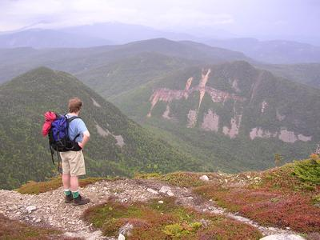

A walk in the woods
Yesterday was my birthday, so I decided to take a vacation day and
take a hike in the wonderful White Mountains of New Hampshire. It was
supposed to be the hottest day of the year thus far (95 degrees and very
humid), but instead it was very comfortable 70 degree day, it was a
super day.
Marc (my constant hiking companion) and I took the signal ridge trail up Mount Carrigain on the south eastern corner of the Pemmigewasset Wilderness.

It was an eight hour hike, 10 miles distance and 3500 feet in elevation. Not too bad for a 45 year old. Of course, since this IS the White Mountains it had to rain sometime. For this hike it was for the last hour. I was soaked by the time I finished, but I had a towel and a change of clothes waiting for me at the car. All in all, a great day. (That's me in the picture from Signal Ridge on the way to the top).
Posted by Dale Asberry on June 11, 2004 at 10:28 AM EDT #